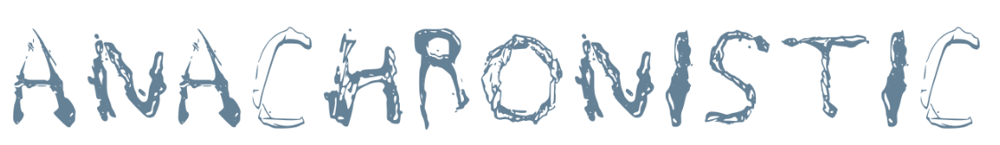

disPLAY is a website that empowers designers to create their own fonts out of found materials. This is a nostalgic attempt to develop an information resource devoted to teaching the skill of font making. follow along with my anachronistic process of creating a water font using water, saran wrap, a scanner, the preview app on mac, adobe image trace, and calligraphr. thanks for joining the initiative! If you make a font, please consider sharing it to be accessed by other creatives on the explore page.
anachronistic /ənakrə'nIstIk/ adjective
...